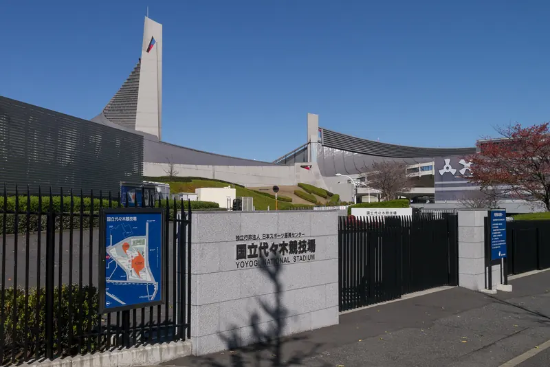

東京都 / 渋谷区
国立代々木競技場 第一体育館
吊り屋根で大空間を覆う体育館。

写真：Rs1421 · CC BY-SA 3.0 · 縮小・WebP変換
見どころ
1964年の東京オリンピックに向けて建設された体育館です。総合意匠は丹下健三、構造は坪井善勝が担当しました。屋根を支える仕組みと、その結果生まれる曲線を分けずに見ると、形と構造の関係が分かります。[1]
- 吊り屋根の曲線
- 屋根を支える主柱
- 内部の大きな無柱空間
構造・素材
屋根吊り構造
屋根を吊る方式を用いて、大きな競技空間を覆っています。屋根の曲面と主柱が外観の特徴となり、内部には競技面を柱で区切らない空間が広がります。[1]
見学
公開条件あり · 確認 2026-09-14
内部への入場は催事や施設の利用条件によります。一般見学できると決めつけず、主催者・施設の案内を確認してください。
建物位置を照合（入口未照合）。地図のピンは入口を保証するものではありません。 建物輪郭と棟の対応を資料で照合しています。公開入口・現地測量による精度は未確認です。
近くの建築
出典・確認状況
基本情報と位置を別々に確認しています。全項目の検証完了を意味しません。
- 基本情報
- 一次資料と照合
- 資料確認日
- 2026-09-14
- 国立代々木競技場の歴史詳細日本スポーツ振興センター · 2026-09-14 · 建設経緯・設計担当・吊り屋根
- 国立代々木競技場日本スポーツ振興センター · 2026-09-14 · 所在地・施設案内
- 施設座標Wikipedia（座標のみ） · 2026-09-14 · 以前の施設代表点の記録。現在のピンは建物輪郭と公式の敷地案内を照合した位置を使う。
- 国立代々木競技場 アクセス・場内案内日本スポーツ振興センター · 2026-09-14 · 敷地内の対象棟と周囲の施設配置を照合。図の表示中心を座標として流用しない。
- 建物輪郭（OpenStreetMap）OpenStreetMap contributors · 2026-09-14 · way 101925760 の建物輪郭。取得時点 2026-09-14T03:56:41Z。ODbL 1.0。入口・測量精度は保証しない。
未確認の項目
- 公開入口・現地測量による位置精度の確認
- 公開日・料金・予約条件の訪問直前の再確認
- 改修後の各部材仕様と現状の確認